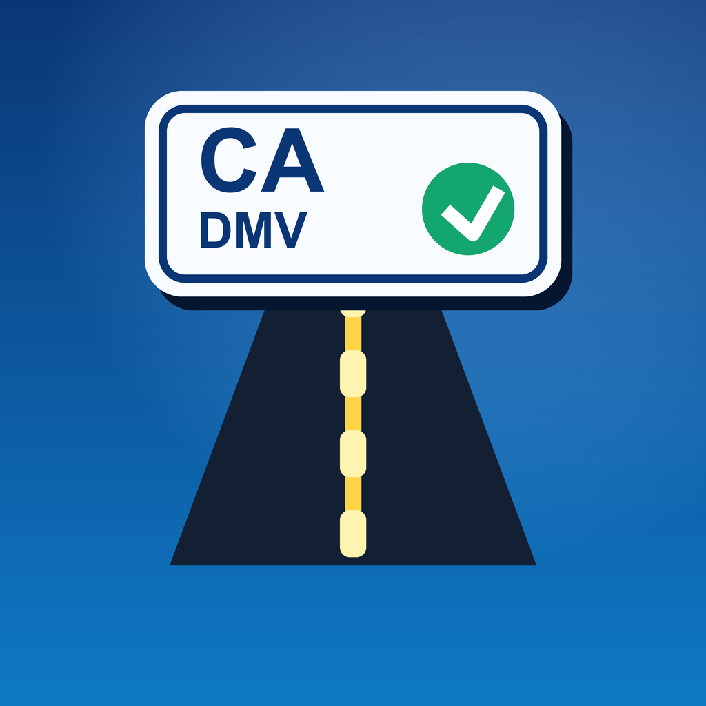
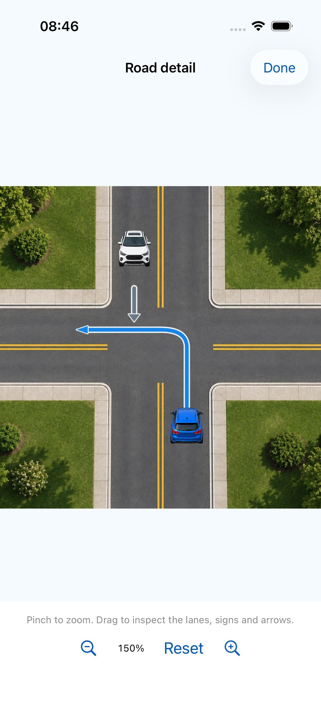
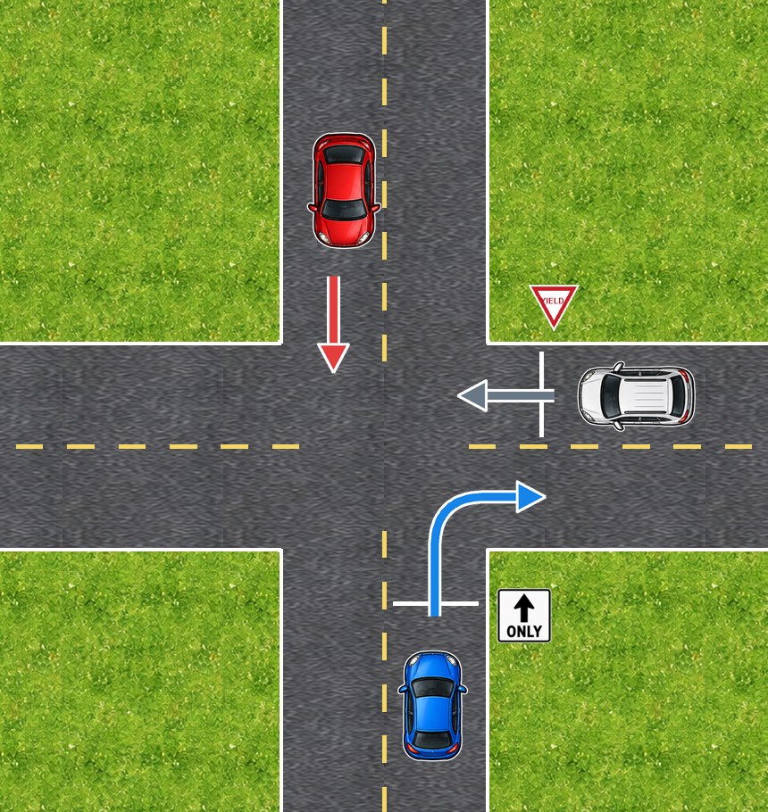

Inspect the scene.
Look at vehicle routes and road signs before choosing.

CalAceCALIFORNIA DMV PRACTICETry a question ↗ROAD SIGNS · INTERSECTIONS · CALIFORNIA
Read the signs, inspect the traffic and practice your answer. CalAce pairs visual questions with explanations so you can review what you missed.
Opening CalAce on the App Store in 2 seconds.
For iOS · In-app purchases available.
Current prices and terms are shown by Apple before purchase.

YOUR STUDY LOOP
Look at vehicle routes and road signs before choosing.
Connect your answer to the rule behind the situation.
Use mistake review and topic practice to decide what to study next.
TRY ONE VISUAL CHALLENGE
The blue car plans to turn right. Check the lane sign.
Original CalAce/Genblink illustration. Arrows show intended routes.
CALIFORNIA KNOWLEDGE-TEST STUDY
Independent study tool. Not affiliated with the California DMV.
No test-pass guarantee. Use the current official handbook alongside your practice.